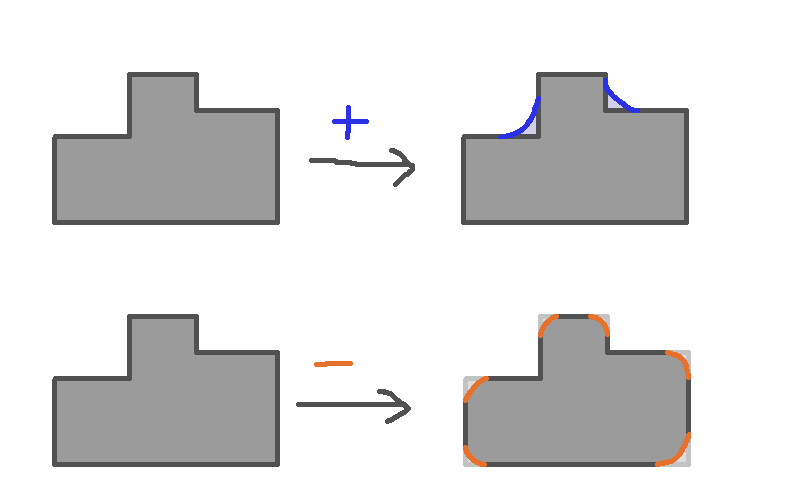

Defining Fillets
I realized after playing around in CAD for a while that I didn't really understand what the formal definition of the filleting operation is. It seemed like a fun exercise to reconstruct what I feel it ought to be from first principles. If I take a collection of cubes and a bunch of edges that are alternatingly convex and concave, and fillet them all, OnShape does something:
What's happening in isolation on each edge is clear to me, but what happens when the edges come together isn't.
This is mostly because I can imagine a notion of "positive" and "negative" filleting operations separately.

Positive filleting only adds material, and negative filleting only removes it. If $S$ is
a subset of a metric space $M$ with distance function $d$, then I can define the
operations of $F^+_r(S)$, "positive fillet to radius $r$", and $F^-_r(S)$, "negative fillet to radius $r$"
(which both output a subset of $M$) as follows.
First define
\[ B_r(x) = \{ y \in M \st d(y,x) \le r \}\]
\[ \square S = \{ x \in M \st \forall y \in B_r(x) . y \in S\}\]
\[ \dia S = \{ x \in M \st \exists y \in B_r(x) . y \in S\}\]
Then we can define
\[ F^+_r(S) = \square \dia S \]
\[ F^-_r(S) = \dia \square S \]
The trouble arises when I want to consider doing both of these simultaneously.
I can't unambiguously sequence them, since they don't commute. Consider the following example
of a thin (relative to $r$) square ring with a small (relative to $r$) hole:
Across the top we do a $F^+_r$. The small hole gets filled in. If we
did a subsequent $F^-_r$, it would round off the corners of the
square. Across the bottom we do a $F^-_r$. This immediately eliminates the ring,
because no point of the ring is surrounded by a solid disc of radius $r$.
So $F^-_r F^+_r S$ in this case is a rounded rectangle, but $F^+_r F^-_r S$ is the empty set.
$F^-_r$ and $F^+_r$ do not commute.
One Idea for Simultaneous Positive and Negative Fillets
I'm still not sure what OnShape is doing precisely, but here's a definition that might be plausible.
Instead of working with exclusively subsets of the metric space as intermediate data, let's
generalize to maps from the metric space to the reals. Define
\[ \red{\square} S = \lambda x . \max_{y \in B_r(x)} \min_{z \not\in S} d(z,y) - r\]
\[ \red{\dia} S = \lambda x . \max_{y \in B_r(x)} \min_{z \in S} d(z,y) - r\]
Both $\red\square$ and $\red\dia$ take a subset $S \subseteq M$ to a function $M \to \R$.
Claim: Although I may be off by some edge cases, I think morally we have
\[\square S \qquad =\qquad \{ x \st \red{\square} S(x) \ge 0\} \]
\[ \dia S \qquad =\qquad \{ x \st \red{\dia} S(x) \le 0 \} \]
This means that it seems plausible to define a filleting operation by subtracting these two
and comparing with zero, or equivalently comparing them with each other:
\[ F S = \{ x \st \red\square S(x) - \red\dia S(x) \ge 0 \} \]
\[ = \{ x \st (\max_{y \in B_r(x)} \min_{z \not\in S} d(z,y)) - (\max_{y \in B_r(x)} \min_{z \in S} d(z,y)) \ge 0 \} \]
\[ = \{ x \st \max_{y \in B_r(x)} \min_{z \not\in S} d(z,y) \ge \max_{y \in B_r(x)} \min_{z \in S} d(z,y) \} \]